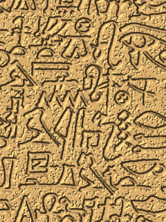
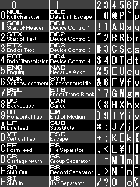
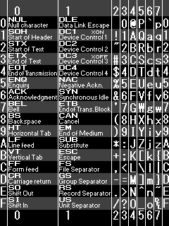
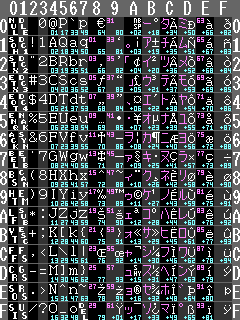
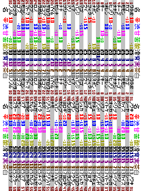

素材集
Web素材とかデスクトップとか携帯の待受とか。

ヒエログリフ。タイリングもできます。
文字コード表
プログラマー必携! 各種文字コード表です。

基本中の基本、アスキーコード表。
(正確に言うと0x5Cがバックスラッシュでなく円マークなので日本ローカルなもの)

携帯の壁紙にしたときステータス表示に重ならないようにちょっと修正。
ついでに0x5Cも本来のバックスラッシュに変更。

ASCII表をベースにLatin-1とShift_JISを詰め込んだ最強の文字コード表。
見にくさも最強。
詳しい説明はこちら。
なお、どうでもいいことだが、この画像の文字はフォントを使わず全て手書きである。

携帯用ポケモンDSの木の実データ表。旅のお供に。